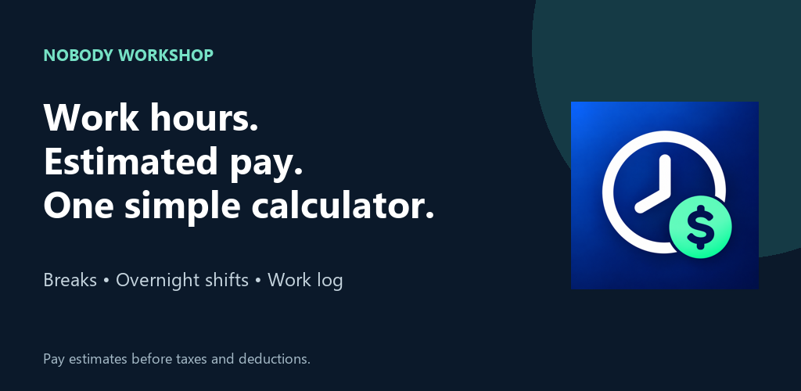
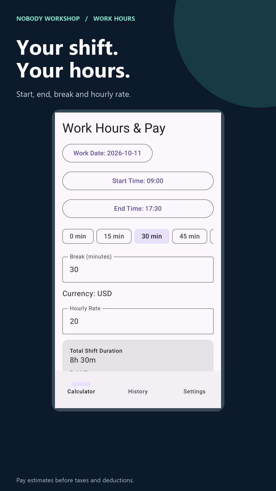
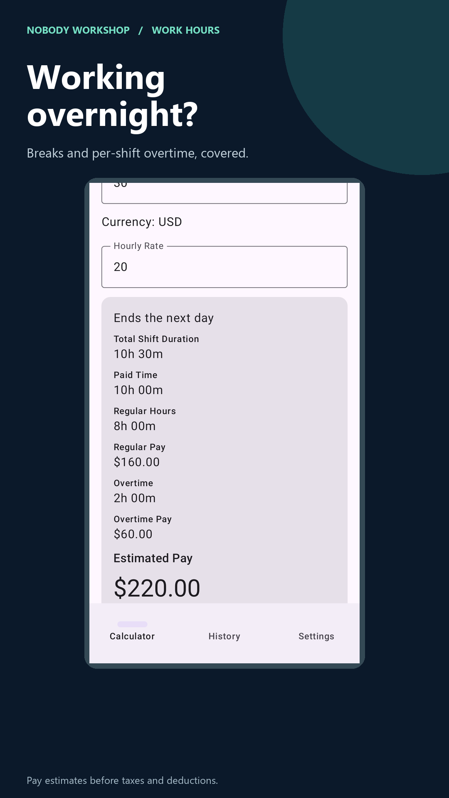
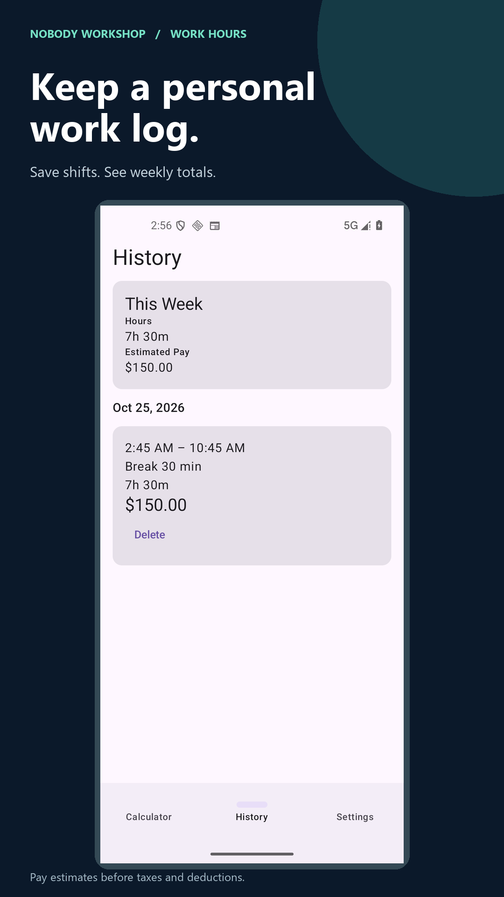

FOR HOURLY WORK, PART-TIME SHIFTS & FREELANCE HOURS
Work Hours & Pay Calculator
Turn a shift into paid hours and estimated earnings. Enter your start time, end time, unpaid break and hourly rate. Save the result to your personal work log.
Get it on Google PlayHow it works
Check your shift in three steps
- Enter when you started and finished, including shifts that cross midnight.
- Subtract unpaid breaks and enter your hourly rate. Set optional overtime per shift.
- Check regular pay, overtime pay and the estimated total. Save the shift and review weekly totals.
Watch the 20-second app overview on YouTube
Your work, clearly recorded



Simple tools for checking your hours
Choose a currency, 12-hour or 24-hour time and the start of your week. Remember your rate and break preferences. Calculations and saved shifts work offline, with no account required.
Frequently asked questions
Can I calculate an overnight shift?
Yes. An end time earlier than the start time is treated as the next day. The shift belongs to its start date.
How is overtime calculated?
You choose a threshold and multiplier. Overtime is calculated separately for each shift, not across a whole week. The app does not automatically apply local labor laws.
Are records backed up or synced?
No. Work records stay on your device. There is no export or cloud sync. Uninstalling removes your records.
Does the app contain ads?
Yes. Calculations work offline, but advertising services use the internet and may process advertising-related data. Read the privacy policy for details.
Pay figures are estimates before taxes and deductions. This app does not provide payroll, tax, legal or employment advice. Different currencies remain separate; no currency conversion is performed.
Support
Questions or feedback? Email service@gamebox.wiki or read our privacy policy.